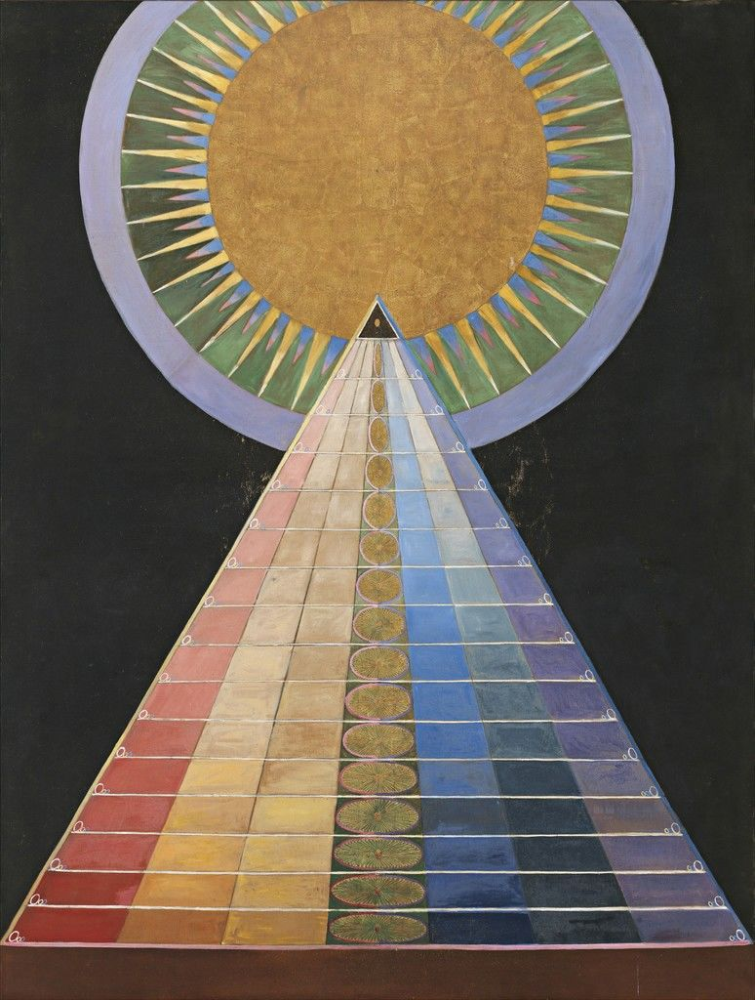
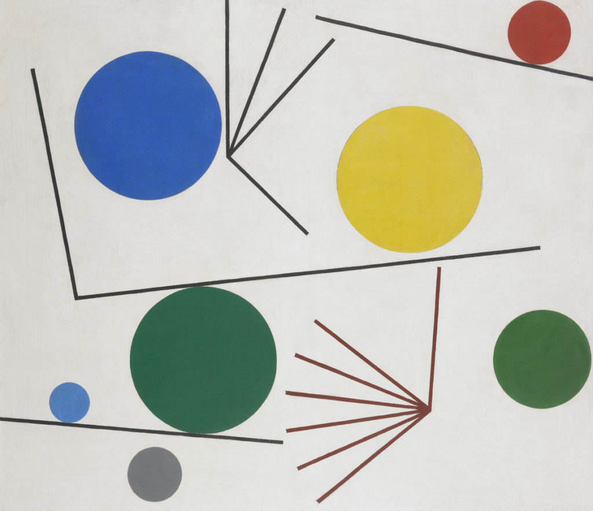
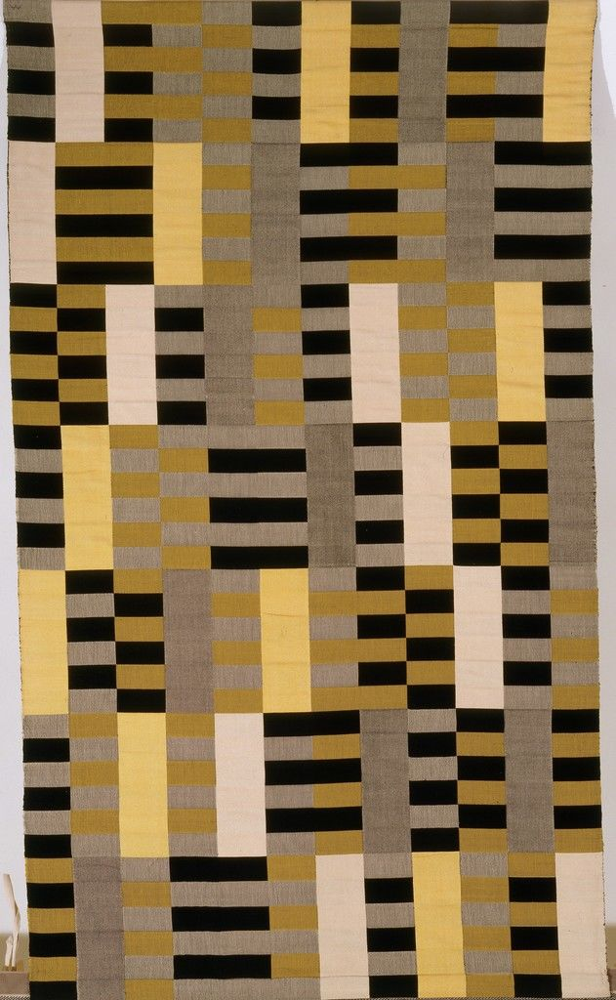
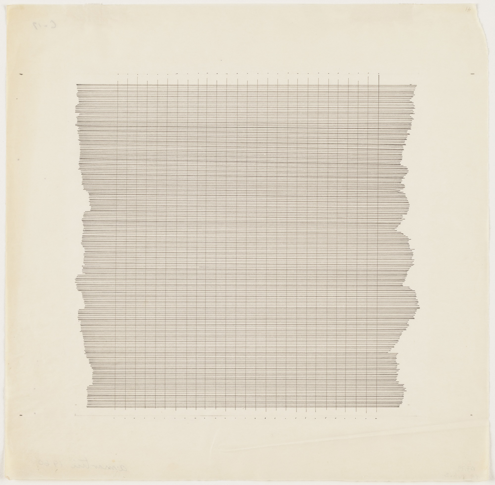
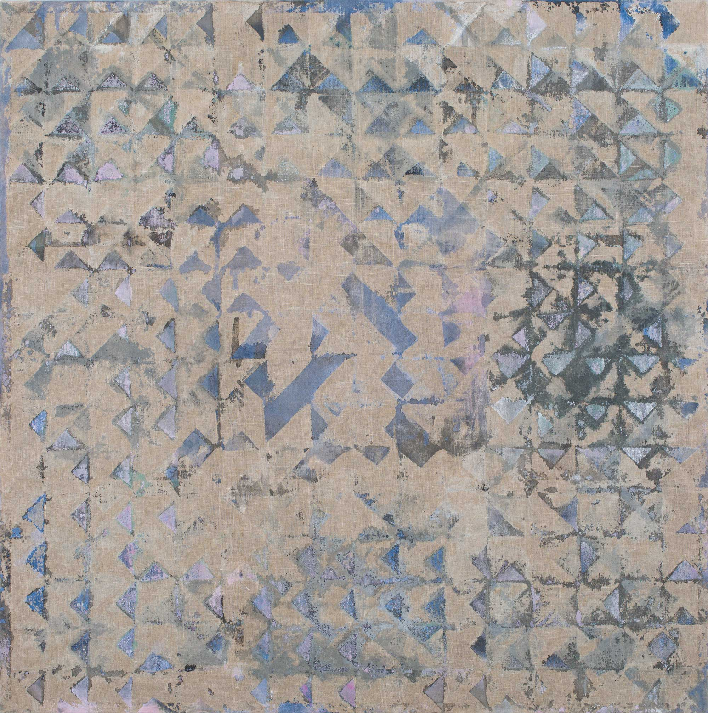

A Designer Advocate at Mozilla,
Jen Simmons,
has already demonstrated in her
CSS Grid Labs
that addressing a grid based layout can be done in an art
and design minded way.
She did a study of Mondrian’s famous grid paintings in primary colors,
using CSS Grid to arrange the color boxes in different and flexible ways.
She also made a rotated grid layout in a study of Jan Tschichold’s Bauhaus
style.
Grids as a visual art and design element can said to date back to ancient
weaving, agricultural purposes, city planning, or Egyptian hieroglyphics.
In Western art history, grids became an important visual element in
defining Modernism of the early 20th century. Mondrian, Malevich and
Kandinsky are often thought of the trailblazers of Modernism, though
there were several women artists of the same time who also experimented
with grid based compositions in their art.
Hilma
af Klint

Hilma af Klint began painting entirely abstract paintings before Mondrian, Malevich and Kandinsky. She
was interested in Spiritualism and believed higher powers painted through her.
Sophie
Taubers-Arp

Sophie Taurbers-Arp made many pieces where geometric forms are overlapping,
touching, or just adjacent to eachother, but also seem to be floating.
They are not tied down to the grid but a free form
grid of connected forms.
Anni Albers

The Bauhaus School in Germany was influenced by Constructivism and Modernism and through the years of
1919 - 1933
produced many notable women artists. One of the many women weaving artists of the Bauhaus,
Anni Albers, is primarily known for her weavings that are geometric compositions heavily featuring a
grid.
Albers and the other women weavers of the bauhaus found the intersection of form and content between
their
modernist grid based drawing, and weaving, a process that employs a physical grid of threads.
Agnes Martin

Another notable woman artist who used grids is Agnes Martin, an american artist who during the 1960s
began making large drawings of grids on canvas, using a pencil. The lightness of her pencil
lines and subtle but often warm color palettes give her paintings an ethereal quality, and offers a
juxtaposition to the grid, which is often associated with hardness

Starting the late 1960s, Lynne Golub Gelfman adressed the modernist tradition of the grid
while also referencing her home of Miami, through use of fence imagery. She has also studied textile
techniques.